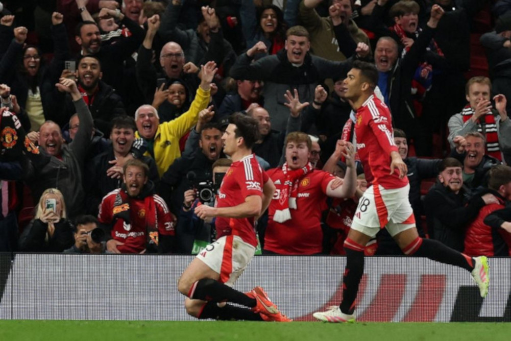

Manchester United x Lyon
UEFA Europa League
A partida valida pelas quartas de final da competição, terminou com classificação do time inglês no Old Trafford, em uma partida histórica que os torcedores dos Reds Devils jamais esqueceram.
Man United 5 x 4 Lyon
tipíco jogo que o futebol nos proporciona, Manchester United abriu 2 x 0 cedo, mas pecou e tomou empate de uma vez.
Prorrogação Cardíaca
Logo no começo o Lyon, fez 4 x 2 levando todos acreditarem que sua classificação estaria constatada,
mas a noite teve outros heróis: Casemiro e Harry Maguire.
Os jogadores protagonizaram suas renascenças das cinzas levando o Manchester united a fazer 3 gols em 7 minutos;
com o quinto gol, o da classificação, sendo feito nos acréscimos.
Certamente com a chegada do Man United as semis finais da UEL, o time ganha mais a confiança do seu torcedor com a possível conquista de um titulo continental.
  Resultado
Resultado
Os marcadores da partida foram:
Manchester United
Manuel Ugarte 10'
Diogo Dalot 45+1'
Bruno Fernandes 114" (P)
Kobbie Mainoo 120'
Harry Maguire 120+1'
Lyon
Tolisso 71'
Tagliafico 77'
Rayan Cherki 104'
Alexandre Lacazette 109' (P)